1) Escudo Monograma
Transmitir confianca, metodo e autoridade tecnica.
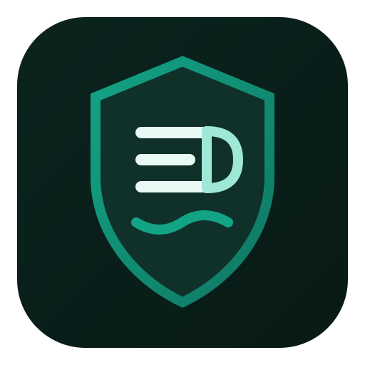
Três direcoes visuais no padrao verde escuro. Compare impacto, legibilidade em icone pequeno e identidade institucional.
Transmitir confianca, metodo e autoridade tecnica.

Representar conexao entre Educacao, Dados e Solucoes.
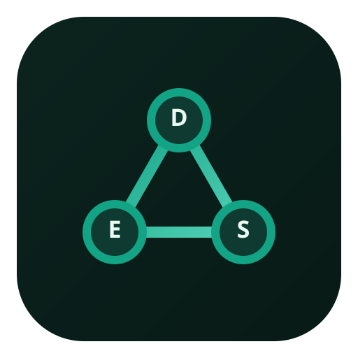
Posicionamento de guia estrategico e clareza para decisao.
Mais legivel em tamanhos pequenos e com acabamento mais premium para marca principal.
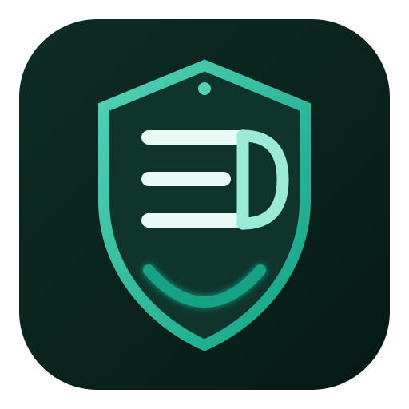
Versao para documentos, timbres, carimbo digital e fundos variados.
EDS mais horizontal e direta, com leitura rapida em telas.
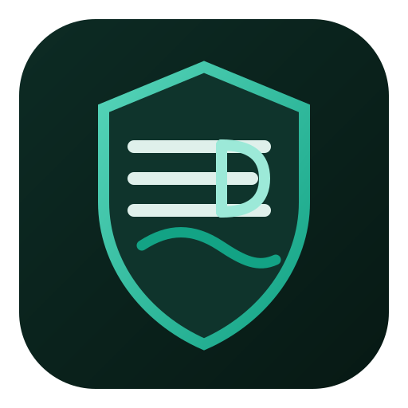
Separacao visual E + D + S para reforcar reconhecimento das letras.
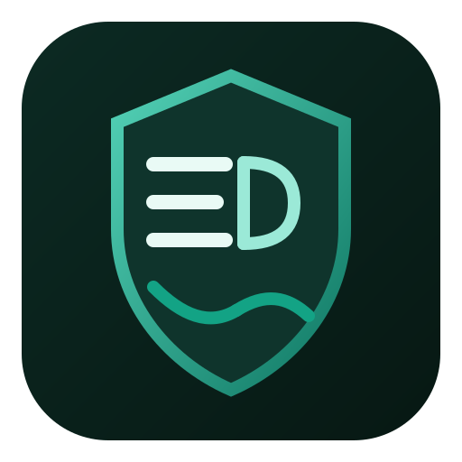
Versao com anel de selo para uso mais institucional e assinatura premium.
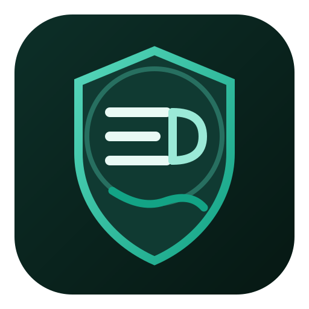
Monograma interlacado com foco no simbolo e “Solucoes Inteligentes” discreto embaixo.
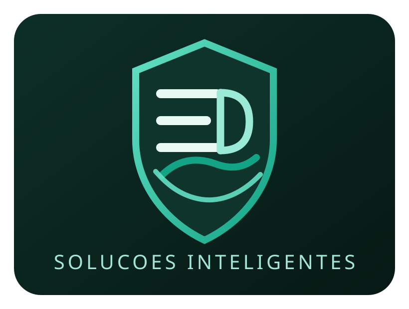
Escudo em destaque e EDS grande abaixo, com subtitulo pequeno institucional.
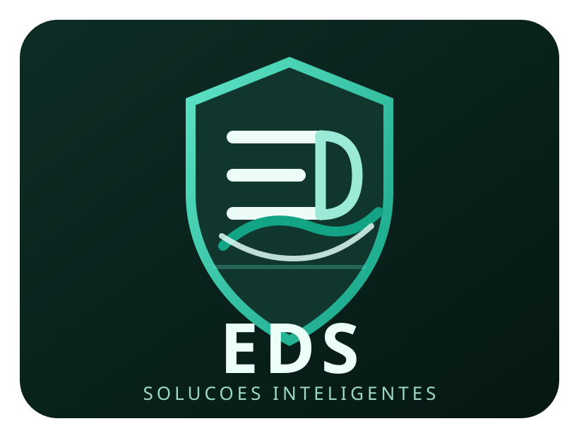
Versao mais institucional, com EDS abaixo e assinatura elegante para marca principal.
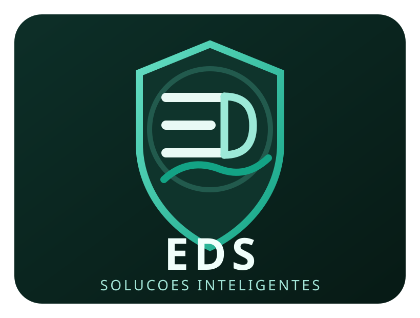
Assinatura pequena dentro do escudo, com destaque em dourado para reforcar identidade premium.
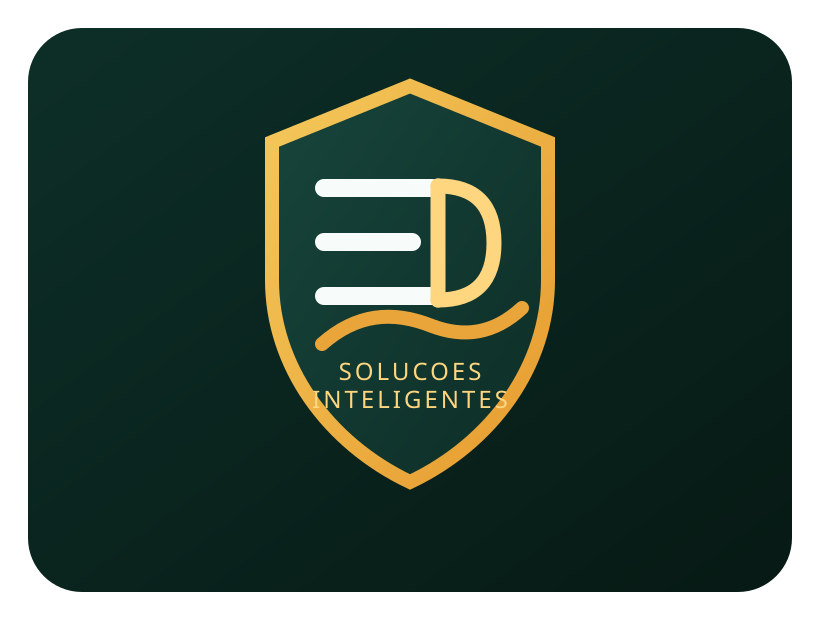
O texto fica mais protegido e legivel por causa da pequena faixa interna.
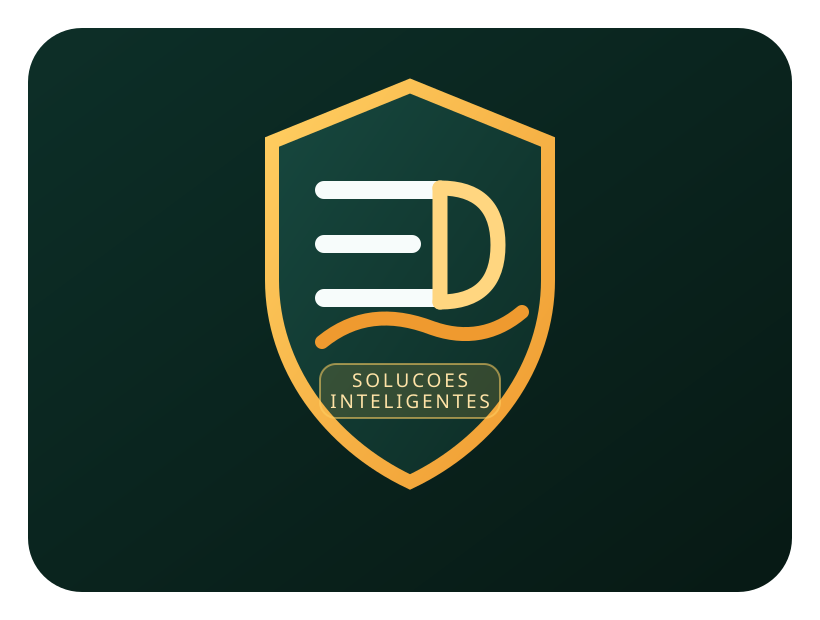
Versao mais institucional com texto muito discreto dentro do escudo e acabamento de selo.
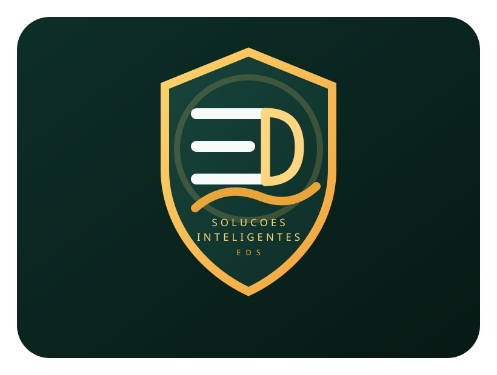
Proximo passo: escolher 1 conceito e refinarmos versao final (icone, horizontal e monocromatica).